Figma 수정 결과 · 0.107.8+219
확인된 6개 항목 수정. 실제 데이터 단위는 유지했습니다. 화면의 이름·온습도·활동량은 로컬 가상 데이터입니다. Figma와 앱은 동일 논리 픽셀 배율로 표시하며 화면 폭·높이는 서로 다릅니다.
01 · 그룹 삭제 문구
Figma · 393px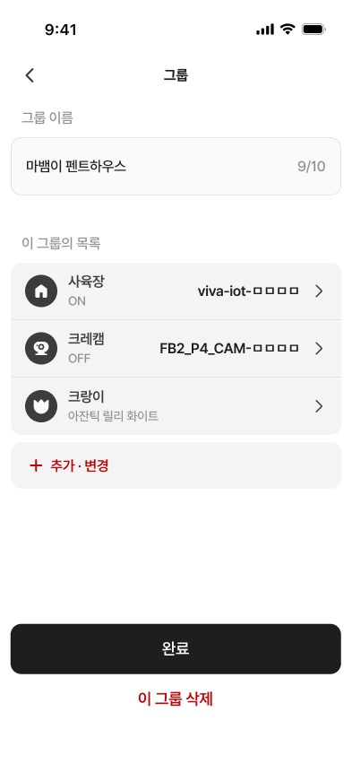
수정 전 · 402pt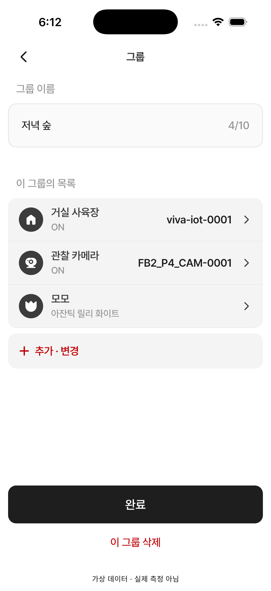
수정 후 · iOS Simulator · 402pt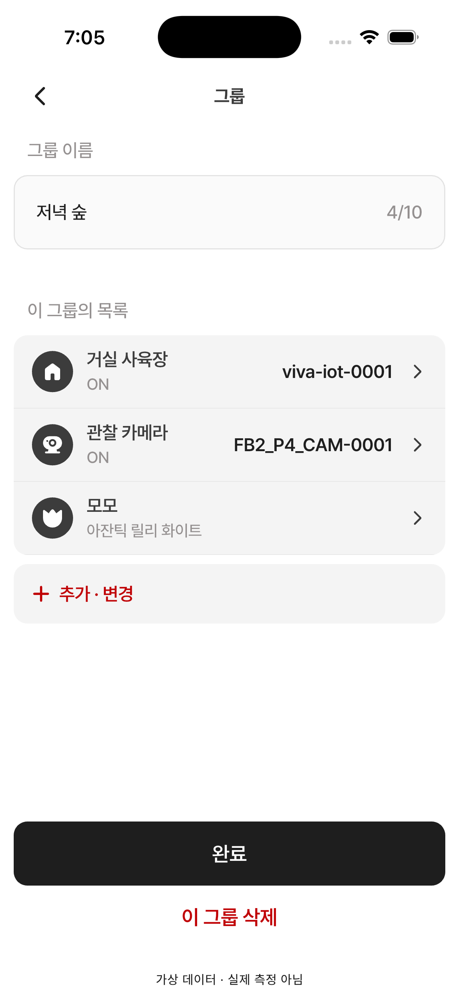
03 · 기기 ID 정렬 · 그룹 제외 문구
Figma · 393px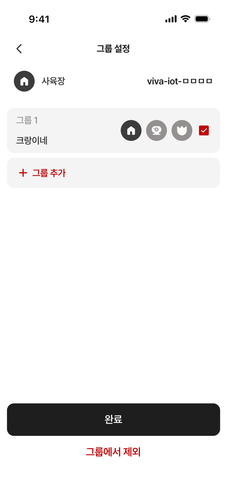
수정 전 · 402pt 수정 후 · iOS Simulator · 402pt
수정 후 · iOS Simulator · 402pt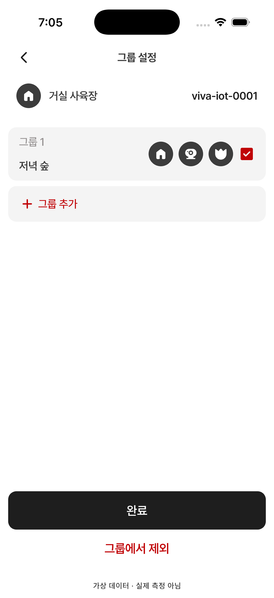
05 · 온습도 여백 · 눈금
Figma · 393px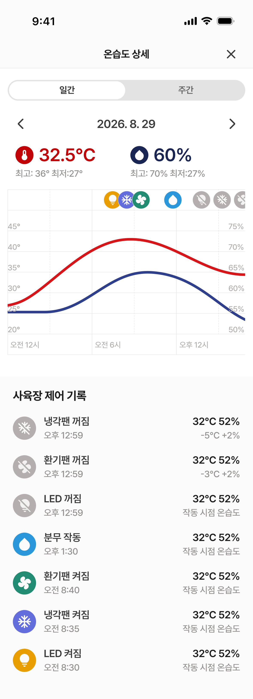
수정 전 · 402pt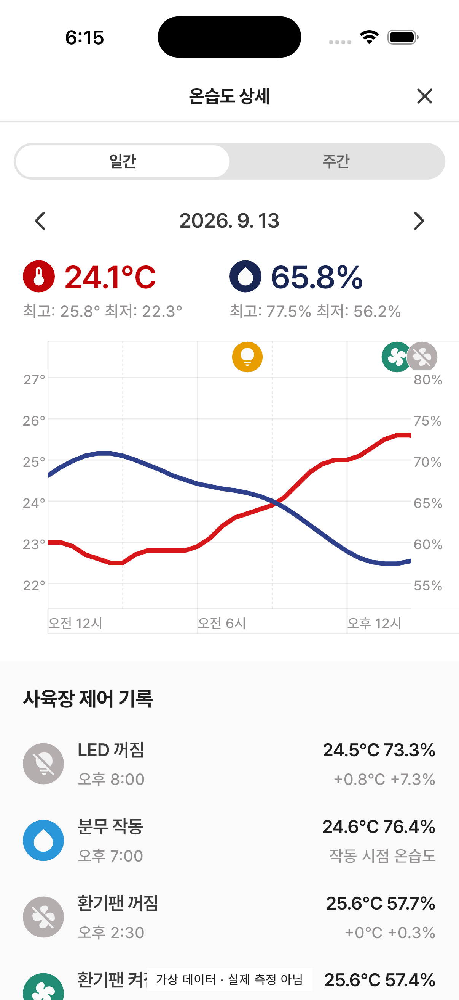
수정 후 · iOS Simulator · 402pt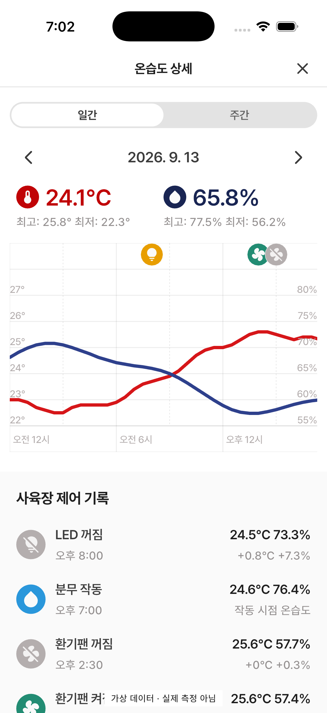
06 · MyCre 일간 격자
Figma · 393px 수정 전 · 402pt
수정 전 · 402pt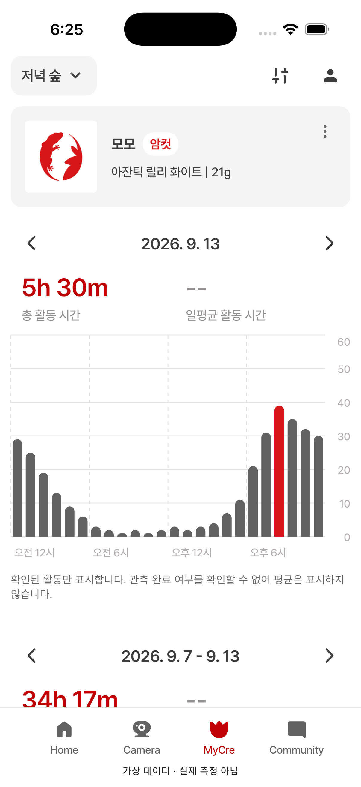
수정 후 · iOS Simulator · 402pt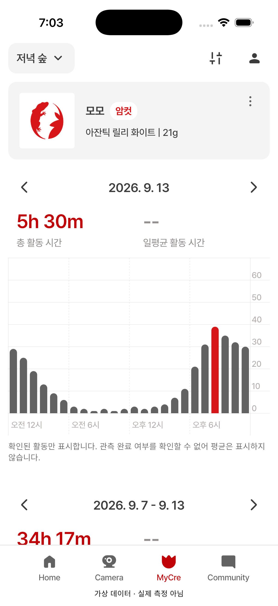
07 · 종 선택 화살표
Figma · 393px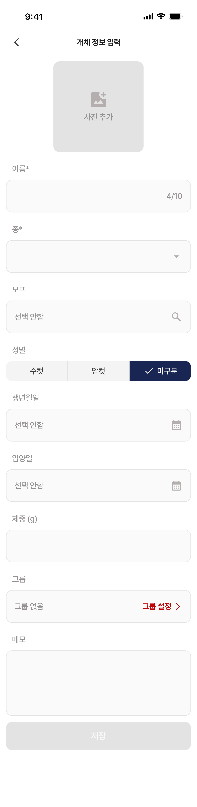
수정 전 · 402pt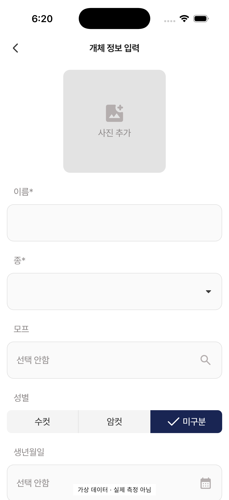
수정 후 · iOS Simulator · 402pt 11 · 미연결 MyCre
Figma · 393px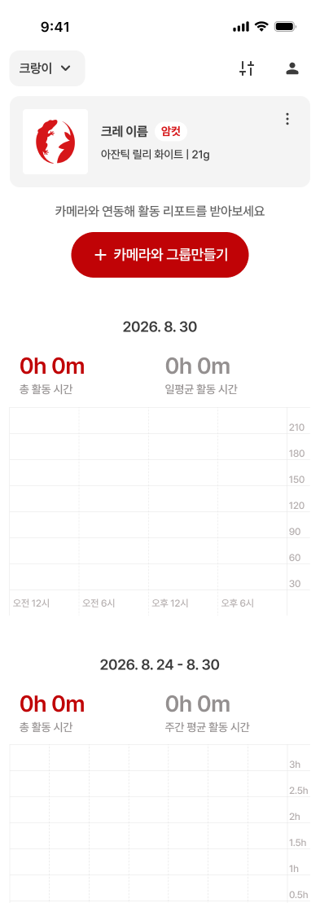
수정 전 · 402pt수정 후 · iOS Simulator · 402pt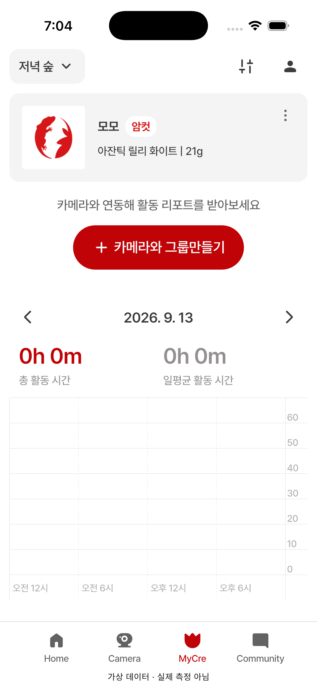
주간 화면 · Flutter 렌더링 검수
아래 두 장은 시뮬레이터 캡처가 아닌 Flutter 위젯 테스트의 393×852 렌더링입니다. 테스트에서 스크롤한 뒤 저장했습니다. 연결 상태의 안내는 유지하고 미연결 안내만 숨깁니다.
연결된 MyCre · 주간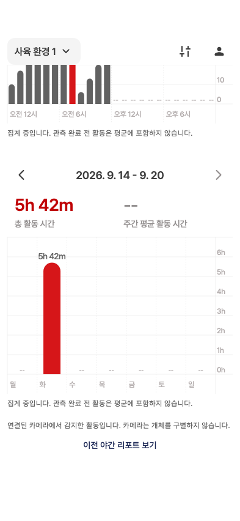
미연결 MyCre · 주간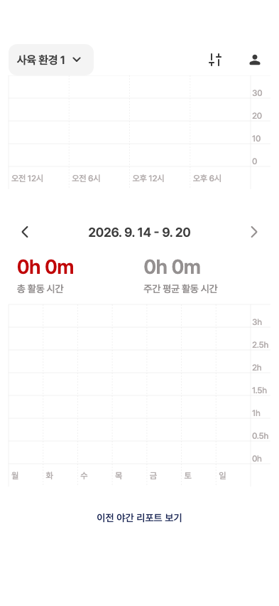